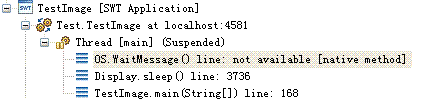

Eclipse作为一个开发平台，使用越来越广泛，基于Eclipse Rich Client Platform开发的客户端程序也越来越多。在当今越来越复杂的应用环境中，我们的客户端程序不可避免的要同时进行多任务的处理。一个优异的客户端程序都会允许用户同时启动多个任务，从而大大提高用户的工作效率以及用户体验。本文中我们来谈谈Eclipse中实现多任务的方式。
在我们基于Eclipse的Java程序中，我们有很多种方式提供多任务的实现。熟悉Java的朋友立即会想到Java的Thread类，这是Java中使用最多的一个实现多任务的类。Eclipse平台为多任务处理提供了自己的API,那就是Job以及UIJob。Eclipse中的Job是对Java Thread的一个封装，为我们实现多任务提供了更方便的接口。以下是Job的基本用法：
清单 1. Job用法示例
Job job = new Job(“Job Name”){
protected IStatus run(IProgressMonitor monitor) {
// 在这里添加你的任务代码
return Status.OK_STATUS;
}
};
job.schedule(delayTime); |
在Eclipse中我们也会经常用到Display.asynchExec() 和Display.synchExec()来启动任务的执行。这两个方法主要为了方便我们完成界面操作的任务。以下是Display.asynchExec()的用法，Display.synchExec()和它类似。
清单 2. Display.synchExec()用法示例
Display.getDefault().asyncExec(new Runnable() {
public void run() {
// 在这里添加你的任务代码
}
}); |
通常，在Eclipse中我们最好使用Eclipse提供的Job接口来实现多任务，而不是使用Java的thread。为什么呢？主要有以下几个原因：
- Job是可重用的工作单元，一个Job我们可以很方便的让它多次执行。
- Job提供了方便的接口，使得我们在处理中能够很方便的与外界交流，报告当前的执行进度
- Eclipse提供了相应的机制使得程序员可以方便的介入Job的调度，例如我们可以方便的实现每次只有一个同一类型的Job在运行
- Eclipse缺省提供了Job管理的程序，可以查看当前所有的Job和它们的进度，也提供UI终止、暂停、继续指定的Job
- 使用Job可以提高程序的性能，节省线程创建和销毁的开销。Eclipse中的Job封装了线程池的实现。当我们启动一个Job时，Eclipse不会马上新建一个Thread，它会在它的线程池中寻找是否有空闲的线程，如果有空闲线程，就会直接用空闲线程运行你的Job。一个Job终止时，它所对应的线程也不会立即终止，它会被返回到线程池中以备重复利用。这样，我们可以节省创建和销毁线程的开销
下面我们从几个方面来讨论Eclipse中Job的实现和使用方面的问题。
Eclipse的核心包中提供了一个JobManager类，它实现了IJobManager接口，Eclipse中Job的管理和调度都是由JobManager来实现的。 JobManager维护有一个线程池，用来运行Job。当我们调用Job的schedule方法后，这个Job会被JobManager首先放到一个Job运行的等待队列中去。之后，JobManager会通知线程池有新的Job加入了运行等待队列。线程池会找出一个空闲的线程来运行Job，如果没有空闲线程，线程池会创建一个新的线程来运行Job。一旦Job运行完毕，运行Job的线程会返回到线程池中以备下次使用。 从上面Job运行的过程我们可以看到，JobManager介入了一个Job运行的全过程，它了解Job什么时候开始，什么时候结束，每一时候Job的运行状态。JobManager将这些Job运行的信息以接口的方式提供给用户，同时它也提供了接口让我们可以介入Job的调度等，从而我们拥有了更加强大的控制Job的能力。
为了我们更方便的了解Job所处的状态，JobManager设置Job的一个状态标志位,我们可以通过Job的getState方法获得Job当前的状态值以了解其状态：
- NONE：当一个Job刚构造的时候，Job就会处于这种状态。当一个Job执行完毕（包括被取消）后，Job的状态也会变回这种状态。
- WAITING:当我们调用了Job的shedule方法，JobManager会将Job放入等待运行的Job队列，这时Job的状态为WAITING.
- RUNNING:当一个Job开始执行，Job的状态会变为RUNNING。
- SLEEPING:当我们调用Job的sleep方法后，Job会变成这一状态。当我们调用schudule方法的时候带上延时的参数，Job的状态也会转入这一状态，在这一段延时等待的时间中，Job都处于这一状态。这是一种睡眠状态，Job在这种状态中时不能马上转入运行。我们可以调用Job的wakeup方法来将Job唤醒。这样，Job又会转入WAITING状态等待运行。
另外，在Eclipse的线程处理中，有一个UI线程的概念。Eclipse程序中的主线程是一个特殊的线程，程序启动后会先执行这个线程，也就是我们的main()函数所在的线程。作为桌面应用程序，我们的主线程主要负责界面的响应以及绘制界面元素，所以通常我们也叫它UI线程。
以下代码，编过SWT应用程序的读者会非常熟悉。它一般出现在main函数的结尾。下面来仔细分析一下它的详细情况。
//当窗口未释放时
while (!shell.isDisposed()) {
//如果display对象事件队列中没有了等待的事件，就让该线程进入等待状态
if (!display.readAndDispatch())
display.sleep();
}
|
上面的程序实际上就是我们UI线程的处理逻辑：当程序启动后，UI线程会读取事件等待队列，看有没有事件等待处理。如果有，它会进行相应处理，如果没有它会进入睡眠状态。如果有新的事件到来，它又会被唤醒，进行处理。UI线程所需要处理的事件包括用户的鼠标和键盘操作事件，操作系统或程序中发出的绘制事件。一般来说，处理事件的过程也就是响应用户操作的过程。
一个好的桌面应用程序需要对用户的操作作出最快的响应，也就是说我们的UI线程必须尽快的处理各种事件。从我们程序的角度来说，在UI线程中我们不能进行大量的计算或者等待，否则用户操作事件得不到及时的处理。通常，如果有大量的计算或者需要长时间等待（例如进行网络操作或者数据库操作）时，我们必须将这些长时间处理的程序单独开辟出一个线程来执行。这样虽然后台运行着程序，但也不会影响界面上的操作。
除主线程之外的所有线程都是非UI线程。 在Eclipse程序中，我们所有对界面元素的操作都必须放到UI线程中来执行，否则会抛出Exception，所以我们要区分出UI线程和非UI线程，保证我们对UI的操作都在UI线程中执行。
如何判断当前线程是否UI线程: 你可以通过调用Display.getCurrent()来知道当前线程是否是UI线程。如果Display.getCurrent()返回为空,表示当前不是UI线程。
- 控制Job的并发运行
对于某些Job，为了避免并发性问题，我们希望同时只有一个这样的Job在运行，这时我们需要控制Job的并发运行。在另一种情况下，我们也需要控制Job的并发运行：我们在程序中对于一个任务，我们有可能会启动一个Job来执行，对于少量的任务来说，这是可行的，但是如果我们预测可能会同时有大量的任务，如果每一个任务启动一个Job，我们同时启动的Job就会非常多。这些Job会侵占大量的资源，影响其他任务的执行。 我们可以使用Job的rule来实现控制Job的并发执行。简单的我们可以通过下面的代码实现。我们先定义一个如下rule：
private ISchedulingRule Schedule_RULE = new ISchedulingRule() {
public boolean contains(ISchedulingRule rule) {
return this.equals(rule);
}
public boolean isConflicting(ISchedulingRule rule) {
return this.equals(rule);
}
};
|
对于需要避免同时运行的Job，我们可以将它们的rule设成上面定义的rule。如：
myjob1.setRule(Schedule_RULE); myjob2.setRule(Schedule_RULE); |
这样对于myjob1和myjob2这两个Job，它们不会再同时执行。Myjob2会等待myjob1执行完再执行。这是由Eclipse的JobManager来提供实现的。JobManager可以保证所有启动的Job中，任意两个Job的rule是没有冲突的。 我们在上面定义的rule是最简单的。我们可以重写isConflicting函数来实现一些更加复杂的控制，比如控制同时同类型的Job最多只有指定的个数在运行。 但是我们要注意，isConflicting方法不能过于复杂。一旦一个Job的rule与其他Job的rule有冲突，isConflicting方法会调用很多次。如果其中的计算过于复杂，会影响整体的性能。
- 根据需要执行Job
由于我们有的Job有可能不是立即执行的，在有些情况下，等到该Job准备执行的时候，该Job所要执行的任务已经没有意义了。这时，我们可以使用Job的shouldSchedule（）和shouldRun（）来避免Job的运行。在我们定义一个Job时，我们可以重载shouldSchedule和shouldRun方法。在这些方法中，我们可以检查Job运行的一些先决条件，如果这些条件不满足，我们就可以返回false。JobManager在安排Job运行时，它会先调用该Job的shouldSchedule方法，如果返回为false，JobManager就不会再安排这个Job运行了。同样，JobManager在真正启动一个线程运行一个Job前，它会调用该Job的shouldRun方法，如果返回false，它不再运行这个Job。在下面的例子中，我们希望启动一个Job在十秒钟之后更新文本框中的内容。为了保证我们的Job运行时是有意义的，我们需要确保我们要更新的文本框没有被销毁，我们重载了shouldSchedule和shouldRun方法。
Text text = new Text(parent,SWT.NONE);
UIJob refreshJob = new UIJob(“更新界面”){
public IStatus runInUIThread(IProgressMonitor monitor) {
text.setText(“新文本”);
return Status.OK_STATUS;
}
public boolean shouldSchedule(){
return !text.isDisposed();
}
public boolean shouldRun(){
return !text.isDisposed();
}
};
refreshJob.schedule(10000); |
- 在UI线程中涉及长时间处理的任务
我们经常碰到这样一种情况：用户操作菜单或者按钮会触发查询大量数据，数据查询完后更新表格等界面元素。用户点击菜单或者按钮所触发的处理程序一般处于UI线程，为了避免阻塞UI，我们必须把数据查询等费时的工作放到单独的Job中执行，一旦数据查询完毕，我们又必须更新界面，这时我们又需要使用UI线程进行处理。下面是处理这种情况的示例代码：
button.addSelectionListener(new SelectionListener(){
public void widgetSelected(SelectionEvent e){
perform();
}
public void widgetDefaultSelected(SelectionEvent e){
perform();
}
private void perform(){
Job job = new Job(“获取数据”){
protected IStatus run(IProgressMonitor monitor){
// 在此添加获取数据的代码
Display.getDefault().asyncExec(new Runnable(){
public void run(){
// 在此添加更新界面的代码
}
});
}
};
job.schedule();
}
}); |
- 延时执行Job,避免无用的Job运行
我们经常需要根据选中的对象刷新我们部分的界面元素。如果我们连续很快的改变选择，而每次刷新界面涉及到的区域比较大时，界面会出现闪烁。从用户的角度来说，我们很快的改变选择，希望看到的只是最后选中的结果，中间的界面刷新都是不必要的。
在Jface中，StructuredViewer提供了addPostSelectionChangedListener方法。如果我们使用这个方法监听selectionChanged事件，当用户一直按着方向键改变选中时，我们只会收到一个selectionChanged事件。这样我们可以避免过度的刷新界面。
实际上，Jface中就是通过延时执行Job来实现这一功能的。我们也可以自己实现类似功能：
private final static Object UPDATE_UI_JOBFAMILY = new Object();
tableviewer. addSelectionChangedListener (new ISelectionChangedListener (){
public void selectionChanged(SelectionChangedEvent event){
Job.getJobManager().cancel(UPDATE_UI_JOBFAMILY);
new UIJob("更新界面") {
protected IStatus runInUIThread (IProgressMonitor monitor) {
//更新界面
return Status.OK_STATUS;
}
public boolean belongsTo(Object family){
return family== UPDATE_UI_JOBFAMILY;
}
}.schedule(500);
}
}); |
首先，我们需要将界面更新的代码放到一个UIJob中，同时我们将Job延时500毫秒执行（我们可以根据需要改变延时的时间）。如果下一个selectionChanged事件很快到来，我们的调用Job.getJobManager().cancel(UPDATE_UI_JOBFAMILY)将以前未运行的Job取消，这样只有最后一个Job会真正运行。
- 在UI线程中等待非UI线程的结束
有时，我们在UI线程中需要等待一个非UI线程执行完，我们才能继续执行。例如，我们在UI线程中要显示某些数据，但是这些数据又需要从数据库或者远程网络获取。于是，我们会启动一个非UI的线程去获取数据。而我们的UI线程必须要等待这个非UI线程执行完成，我们才能继续执行。当然，一种简单的实现方法是使用join。我们可以在UI线程中调用非UI线程的join方法，这样我们就可以等待它执行完了，我们再继续。但是，这会有一个问题。当我们的UI线程等待时，意味着我们的程序不会再响应界面操作，也不会刷新。这样，用户会觉得我们的程序象死了一样没有反应。这时，我们可以使用ModalContext类。你可以将你要执行的获取数据的任务用ModalContext的run方法来运行（如下）。ModalContext会将你的任务放到一个独立的非UI线程中执行，并且等待它执行完再继续执行。与join方法不同的是，ModalContext在等待时不会停止UI事件的处理。这样我们的程序就不会没有响应了。
try {
ModalContext.run(new IRunnableWithProgress(){
public void run(IProgressMonitor monitor)
throws InvocationTargetException, InterruptedException {
/*需要在非UI线程中执行的代码*/
ModalContext.checkCanceled(monitor);
}
}, true, new NullProgressMonitor(), Display.getCurrent());
} catch (InvocationTargetException e) {
} catch (InterruptedException e) {
} |
- 针对相关联的Job统一进行处理
有时，我们需要对相关联的Job一起处理。例如需要同时取消这些Job，或者等待所有这些Job结束。这时我们可以使用Job Family。对于相关联的Job，我们可以将它们设置成同一个Job Family。我们需要重载Job的belongsTo方法以设置一个Job的Job Family。
Private Object MY_JOB_FAMILY = new Object();
Job job = new Job(“Job Name”){
protected IStatus run(IProgressMonitor monitor) {
// 在这里添加你的任务代码
return Status.OK_STATUS;
}
public boolean belongsTo(Object family){
return MY_JOB_FAMILY.equals(family);
}
}; |
我们可以使用JobManager的一系列方法针对Job Family进行操作：
Job.getJobManager().cancel(MY_JOB_FAMILY); //取消所有属于MY_JOB_FAMILY的所有Job Job.getJobManager().join(MY_JOB_FAMILY); //等待属于MY_JOB_FAMILY的所有Job结束 Job.getJobManager().sleep(MY_JOB_FAMILY); //将所有属于MY_JOB_FAMILY的Job转入睡眠状态 Job.getJobManager().wakeup(MY_JOB_FAMILY); //将所有属于MY_JOB_FAMILY的Job唤醒 |
一旦我们使用了线程，我们的程序中就有可能有死锁的发生。一旦发生死锁，我们发生死锁的线程会没有响应，导致我们程序性能下降。如果我们的UI线程发生了死锁，我们的程序会没有响应，必须要重启程序。所以在我们多线程程序开发中，发现死锁的情况，解决死锁问题对提高我们程序的稳定性和性能极为重要。
如果我们发现程序运行异常（例如程序没有响应），我们首先要确定是否发生了死锁。通过下面这些步骤，我们可以确定是否死锁以及死锁的线程：
- 在Eclipse中以Debug模式运行程序
- 执行响应的测试用例重现问题
- 在Eclipse的Debug View中选中主线程（Thread[main]），选择菜单Run->Suspend。这时Eclipse会展开主线程的函数调用栈，我们就可以看到当前主线程正在执行的操作。
- 通常，Eclipse在等待用户的操作，它的函数调用栈会和以下类似：
图片示例

- 如果主线程发生死锁，函数调用栈的最上层一般会是你自己的函数调用，你可以查看一下你当前的函数调用以确定主线程在等待什么
- 使用同样的方法查看其他线程，特别是那些等待UI线程的线程
我们需要找出当前线程相互的等待关系，以便找出死锁的原因。我们找出死锁的线程后就可以针对不同情况进行处理：
- 减小锁的粒度，增加并发性
- 调整资源请求的次序
- 将需要等待资源的任务放到独立的线程中执行
- 不要在Job中使用Thread.sleep方法。如果你想要让Job进入睡眠状态，最好用Job的sleep方法。虽然，使用Thread.sleep和Job的sleep方法达到的效果差不多，但是它们实现的方式完全不同，对系统的影响也不一样。我们知道Eclipse中Job是由Eclipse的JobManager来管理的。如果我们调用Job的sleep方法，JobManager会将Job转入睡眠状态，与其对应的线程也会重新放入线程池等待运行其他Job。而如果我们在Job中直接调用Thread.sleep方法，它会直接使运行Job的线程进入睡眠状态，其他Job就不可能重用这个线程了。同时，虽然运行该Job的线程进入了睡眠状态，Job的状态还是Running（运行状态），我们也不能用Job的wakeup方法唤醒该Job了
- Job的取消。一般我们会直观的认为，一旦调用Job的cancel方法，Job就会停止运行。实际上，这并不一定正确，当Job处于不同的状态时，我们调用Job的cancel方法所起的效果是不同的。当Job在WAITING状态和SLEEPING状态时，一旦我们调用cancel方法，JobManager会将Job直接从等待运行的队列中删除，Job不会再运行了，这时cancel方法会返回true。但是如果Job正在运行，cancel方法调用并不会立即终止Job的运行，它只会设定一个标志，指明这个Job已经被取消了。我们可以使用Job的run方法传入的参数IProgressMonitor monitor，这个参数的isCanceled方法会返回Job是否被取消的状态。如果需要，我们必须在我们的代码的适当位置检查Job是否被取消的标志，作出适当的响应。另外，由于调用Job的cancel方法不一定立即终止Job，如果我们需要等待被取消的Job运行完再执行，我们可以用如下代码：
if (!job.cancel()) job.join();
- Join方法的使用。由于join方法会导致一个线程等待另一个线程，一旦等待线程中拥有一个被等待线程所需要的锁，就会产生死锁。当我们的线程中需要用到同步时，这种死锁的情况非常容易出现，所以我们使用join时必须非常小心，尽量以其他方法替代。
- 避免过时的Job造成的错误。由于我们启动的线程并不一定是马上执行的，当我们的Job开始运行时，情况可能发生了变化。我们在Job的处理代码中要考虑到这些情况。一种典型的情况是，我们在启动一个对话框或者初始化一个ViewPart时，我们会启动一些 Job去完成一些数据读取的工作，一旦数据读取结束，我们会启动新的UI Job更新相应的UI。有时，用户在打开对话框或者View后，马上关闭了该对话框或者View。这时我们启动的线程并没有被中断，一旦在Job中再去更新UI，就会出错。在我们的代码中必须作相应的处理。所以，我们在线程中更新界面元素之前，我们必须先检查相应的控件是否已经被dispose了
在我们进行基于Eclipse的客户端开发时，使用多线程可以大大的提供我们的程序并发处理能力，同时对于提高用户体验也有很好的帮助。但是，多线程程序也有其不利的一面，我们也不要滥用线程：
- 首先，多线程程序会大大的提高我们程序的复杂度，使得我们的开发和调试更加困难
- 其次，过多的线程容易引发死锁、数据同步等并发问题的发生
- 另外，由于线程创建和销毁需要开销，程序的整体性能可能因为过多线程的使用而下降
所以，我们在使用线程时一定要谨慎。本文对Eclipse线程的讨论，希望能对大家使用线程有所帮助。由于实际情况较为复杂，文中所提到的方法仅供参考，读者对于不同的实际问题需要进行具体分析，从而找出最佳的解决方案。
- 查看
developerWorks
博客的最新信息。
梁骞, IBM 中国软件开发中心，现在从事 Workplace Managed Client 软件的开发工作，通过 liangq@cn.ibm.com 可以与他联系。